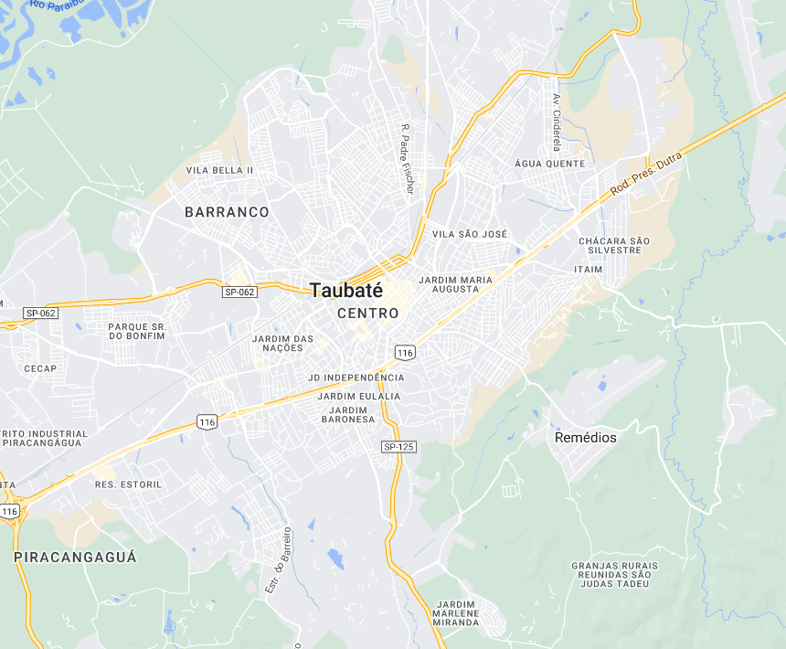
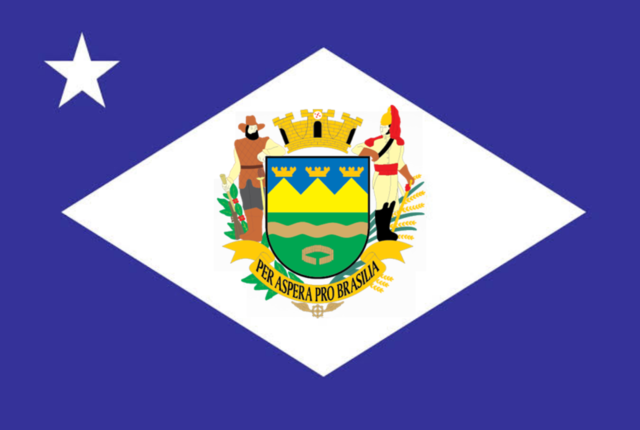

Taubaté - Geodex


Município de Taubaté
-
Populacão: 320.820 pessoas
-
Área: 625,003km²
-
Fundação: 5 de Dezembro de 1645
-
Distância da Capital: 132km
Taubaté é um município que teve origem como uma antiga aldeia de índios Guaianás conhecida por Itaboaté. O sertanista Jacques Félix foi enviado para desbravar a região em 1636 e estabeleceu-se com sua família e escravos índios. Em 1645, a povoação foi elevada à categoria de vila com o nome de São Francisco das Chagas de Taubaté. O ouro foi descoberto na região, impulsionando o desenvolvimento. Posteriormente, a cultura do café se tornou predominante, e Taubaté tornou-se um dos principais produtores do vale do Paraíba. O nome Taubaté tem origem no tupi, significando "taba verdadeira" ou "muito barro ou argila".